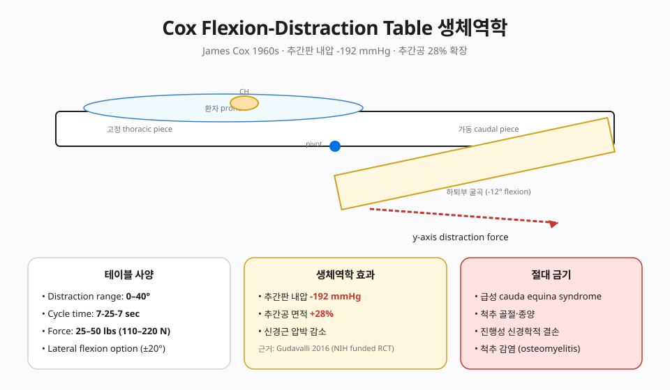
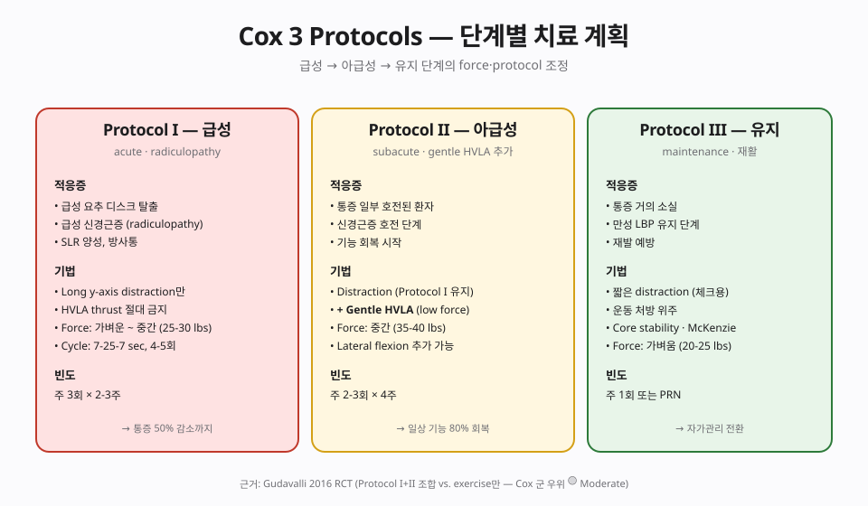

📊 핵심 다이어그램
이 챕터의 핵심 개념을 시각화한 도식.


📘 편집 원칙
근거 기반 의학(EBM) 관점. Vitalism · 전신질환 인과론 · AK 진단 확장 · Cranial rhythm 등 No evidence 주장은 🔴 제외 또는 비판적으로만 언급합니다.
개요
본 챕터가 다루는 기법
Cox Table의 굴곡-신연 기전 — 추간판 내압 -192mmHg, 추간공 면적 +28%. Protocol I(순수 신연, radiculopathy 전용), II(+HVLA), III(재활). 수술 전 보존 치료 옵션.
근거 수준 한눈에
근거
🟡 Moderate — 요추 디스크 + 신경근증 (Gudavalli 연방 연구)
이론·기전
모든 카이로프랙틱 기법은 Afferentation → 중추 처리 → Efferentation 프레임(Chapter 2 참조)에서 해석합니다. 이 기법이 어떤 구심성 입력을 만들고 어떤 원심 출력을 조절하는지.
창시자와 역사적 맥락
James M. Cox(b. 1937)는 1960-70년대에 osteopath Alan Stoddard의 flexion-distraction 개념과 McManis table을 발전시켜 Cox Flexion-Distraction Technique을 정립했습니다. 카이로프랙틱 기법 중에서도 요추 디스크 탈출과 척추관 협착에 대해 비교적 임상 근거가 축적된 영역으로, 미국에서 연방 연구비(NIH/HRSA)를 받은 다기관 임상연구(Gudavalli 2006, Snow 2018 등)가 진행된 드문 카이로프랙틱 기법입니다.
생체역학 — 견인-신연(distraction)의 물리
Cox 테이블의 미측(caudal) 섹션은 시술자의 핸들 조작으로 굴곡(flexion)과 견인(distraction)을 주기적으로 만들어, 표적 분절의 추간판 내압(intradiscal pressure)을 일시적으로 낮추고 추간공 면적을 확장합니다. Nachemson 고전 연구의 의자 좌위 압력을 기준점으로 할 때, flexion-distraction은 음압 영역까지 IDP를 낮출 수 있다는 보고가 있습니다(Gudavalli 2001). 추력은 HVLA가 아니라 주기적 저진폭 견인 + 굴곡으로, 신경 구조(신경근·경막)의 활주(neural mobilization) 효과도 가설로 제안됩니다.
신경생리 — Afferentation → Central → Efferentation
- 🟢 Afferentation — 주기적 견인은 Type III 기계수용기(Ruffini)와 관절 캡슐의 신장 수용기를 점진적으로 활성화. 신경근의 미세 활주는 후근절절 통증 유발 입력을 일시적으로 감소.
- 🟡 중추 처리 — 후각 gate control, 하행성 통증 억제와 함께, 말초 신경원의 충혈(neural edema) 감소 가설.
- 🟢 Efferentation — 표적 근육의 방어 톤 감소, 정상 motor pattern 회복, 환자 보고 동통 감소.
🟢 근거 수준
요추 디스크 탈출 + 신경근증: Gudavalli 2006 (RCT, n=200+) — 6개월 시점 active care 대비 통증·기능 호전 우위. 척추관 협착: Snow 2018 RCT — 6개월 시점 보행 기능 우위. 카이로프랙틱 기법 중 가장 견고한 임상 근거를 가진 영역 중 하나입니다.
임상 적용
적응증 — Cox가 1차 선택이 되는 영역
- 요추 디스크 탈출 + 신경근증(red flag 음성, CES 없음)
- 요추 척추관 협착(neurogenic claudication 호전 가능)
- Post-laminectomy syndrome — 수술 후 만성 요통·방사통
- 척추전방전위증(grade I-II), Schmorl's node, 비특이적 만성 요통
환자 자세 · 접촉점 · 견인 protocol
- 자세 — Prone, 가슴은 thoracic strap으로 고정, 발목은 ankle cuff로 미측 섹션에 고정. 환자가 호흡과 통증 양상을 자유롭게 표현할 수 있도록.
- 접촉점 — 시술자의 손은 표적 분절 윗쪽 SP에 접촉(stabilization), 반대 손은 테이블 핸들로 미측 섹션을 굴곡·견인.
- 3-cycle protocol — 약 4-5초 간격으로 굴곡 + 견인 → 중립 복귀를 3회 반복, 환자 통증·증상 변화 관찰. 통증이 centralize(중앙으로 모임) 되면 진행, peripheralize(말단으로 퍼짐) 되면 중단.
- 벡터 — Listing/증상에 따라 lateral flexion·circumduction 추가 가능. 시술자 숙련도가 필수.
🔴 안전 · 금기 · 다학제 협진
금기
- 절대 금기 — Cauda equina syndrome(즉각 외과적 응급), 진행성 신경학적 결손, 진행성 척추 종양·감염·골수염, 신선 척추 골절, 동맥류, 임신 후기의 직접 복부 압박.
- 상대 금기 — 활동기 류마티스, 강직척추염, 척추 수술 1년 이내 기구 부근, 골다공증 진행 단계. 이때는 견인 폭과 횟수를 보수적으로 조정.
- 중단 신호 — 시술 중 신경학적 결손 출현, 통증 peripheralization, 새로운 방광·직장 증상 — 즉시 중단하고 영상의학·신경외과 의뢰.
🔗 다학제 협진
디스크 탈출·협착 환자는 영상의학·정형외과·신경외과·통증의학과와 평행 추적하는 것이 안전합니다. Cox는 수술이 임박하지 않은 환자에서 보존적 1차 옵션으로 가치가 있으나, 수술 적응이 명확한 환자에서는 시간을 끌지 않고 외과적 의뢰를 권합니다. 물리치료(운동·신경 활주)와 결합 시 효과가 강화됩니다.
근거 수준
| 적응증 | 근거 수준 | 비고 |
|---|---|---|
| 본 기법 주된 적응증 | 🟡 Moderate — 요추 디스크 + 신경근증 (Gudavalli 연방 연구) | 상세는 강의록 MD 참조 |
| 🔴 전신질환·내장·자폐·ADHD·천식·고혈압 치료 | 🔴 No evidence | Cochrane·PubMed 근거 없음 |
🔴 비판적 시각
🔴 마미증후군은 절대 금기
Cauda equina syndrome — 즉시 응급 수술 대상, Cox 시술 절대 금기. 중증 골다공증·감염·종양·대동맥류 의심 시 회피. Gudavalli 연방 연구가 생체역학 수치 검증 — 신뢰 가능한 과학 근거.
상세 비판 문헌 리뷰와 과장 vs 근거 비교표는 강의록 MD 확장판에서 다룹니다.
강의 자료
11/11 자료 준비 완료.
📖 강의록
🎧 팟캐스트
🎥 AI 동영상
🎴 PPTX 슬라이드 (4개 × 15장)
15장 🎴Part 2 · Aff/Def/Eff ✅ 준비 완료
15장 🎴Part 3 · Assessment ✅ 준비 완료
15장 🎴Part 4 · 임상·비판 ✅ 준비 완료
15장
📄 Report Markdown
NotebookLM 자동 생성 📄Report 2/4 ✅ 준비 완료
NotebookLM 자동 생성 📄Report 3/4 ✅ 준비 완료
NotebookLM 자동 생성 📄Report 4/4 ✅ 준비 완료
NotebookLM 자동 생성
NotebookLM 노트북: 열기 →
🎬 레거시 시연 영상 (사용자 직접 시연)
2015년 KOA 학회 및 임상 시연 당시 사용자가 촬영한 원본 영상입니다. 참고용 · 직접 시연 중심이므로 이론 설명은 챕터 본문을 참고하세요.